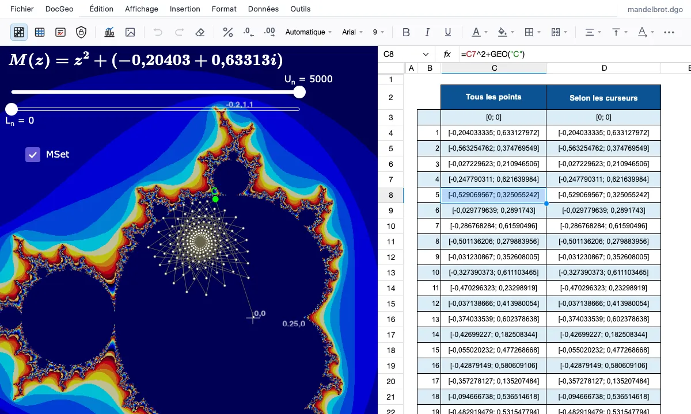

Le tableur
Un onglet de DocGeo peut contenir une feuille de calcul de DocCells, le tableur de DocTools : à côté de la figure, ou seule dans son onglet. La figure et les cellules se lisent l’une l’autre, en direct.

Dans l’exemple ci-dessus, l’ensemble de Mandelbrot :
-
la colonne B calcule l’orbite de 0 pour z ↦ z² + C, où C est
le point vert de la figure : B1 contient
[0; 0], B2=GEO("C")et B3=B2^2+GEO("C"), recopiée jusqu’à B5000. Une liste de deux nombres se calcule comme un point de la figure, c’est-à-dire comme un complexe ; -
la colonne C ne garde que les termes dont le rang, en
colonne A, est compris entre les curseurs Ln et
Un, lus par
GEO("L_n")etGEO("U_n"); -
la figure relit ces termes par
c = !C1:C5000et les dessine, reliés par des segments, avecd = Liste(c).
Quand on déplace C, les 5000 termes sont recalculés et la ligne suit pendant le mouvement : elle reste bornée tant que C est dans l’ensemble, et s’échappe quand on l’en fait sortir.
Ouvrir cette figure dans DocGeo
Ajouter un tableur
| Action | Comment |
|---|---|
| À côté de la figure | Fichier › Vue › Nouvelle vue tableur : une colonne de plus, à droite, avec une feuille vide ; les colonnes prennent la même largeur (plusieurs vues) |
| Dans son propre onglet | Fichier › Nouvel onglet tableur : un onglet « Tableur1 », « Tableur2 »…, qui ne contient qu’une feuille (classeurs) |
| Redimensionner, déplacer | tirer la séparation des colonnes ; Fichier › Vue › Déplacer la vue à gauche ou à droite, quand la vue tableur est active |
| Supprimer | Fichier › Vue › Supprimer la vue tableur : la vue et ses cellules disparaissent, la figure reprend la place. Un onglet tableur se supprime comme tout onglet. |
- Un onglet a au plus une vue tableur : Nouvelle vue tableur est grisé quand il en a déjà une.
- Une vue tableur montre une seule feuille, sans onglets de feuilles. Pour travailler sur plusieurs feuilles, on crée plusieurs onglets tableur, qui se lisent entre eux (voir plus bas).
- Ajouter ou supprimer une vue tableur s’annule, comme les autres actions sur les vues.
Les menus et les boutons du tableur
Un clic ou une frappe dans les cellules rend la vue tableur active. Les barres de DocGeo font alors place à celles du tableur, à la même hauteur : rien ne bouge en dessous.
- La barre de menus garde Fichier, suivi du menu DocGeo, puis des menus du tableur (Édition, Affichage, Insertion, Format, Données, Outils).
- La barre de boutons du tableur (format des nombres, police, gras, couleurs, bordures, alignement…) remplace la barre d’actions de DocGeo.
- Le menu DocGeo donne ce qui reste utile : Historique de la construction, Palette d’outils, Propriétés, et le Manuel d’utilisation.
- On revient aux barres de DocGeo en cliquant dans la figure, dans le panneau « Construction », en y saisissant une ligne, ou en changeant d’onglet. Dans un onglet tableur, les barres du tableur restent.
- Un dialogue du tableur (mise en forme conditionnelle, format des nombres…) voile toute la fenêtre de DocGeo, jusqu’à sa fermeture.
Le panneau « Construction » reste disponible dans un onglet tableur (DocGeo › Historique de la construction) : un objet qu’on y saisit est calculé sans être dessiné, et les cellules de cet onglet peuvent le lire.
Quand DocGeo est intégré à une autre page, comme DocTools, il n’a pas de barre de menus : le tableur garde ses barres en haut de sa colonne.
La figure lit les cellules
Une formule de la figure désigne une cellule de la vue tableur
de l’onglet par un point d’exclamation suivi de l’adresse de
la cellule : !B3.
| Écriture | Valeur |
|---|---|
!B3 |
la cellule B3 |
!B2:B21 |
une plage d’une ligne ou d’une colonne : une liste de valeurs |
!A1:C3 |
un rectangle : une liste de lignes, chacune une liste |
Tableur1!B3 |
la cellule B3 d’un onglet tableur |
'Figure 1'!!B3 |
la cellule B3 de la vue tableur d’un autre onglet |
A = (!B1, !B2)
r = !B3
L = !A1:A10-
L’adresse s’écrit en lettres majuscules puis en chiffres
(
B3,AA12), sans$, collée au point d’exclamation. Pour la négation d’un objet nommé A1, on écrit!(A1). -
Un nombre, un texte, un booléen ou une liste est lu tel
quel ; une date est lue comme un nombre. Une cellule
contient une liste saisie entre crochets,
[2; 1], ou calculée :=[2; 1]*3. Une cellule vide ou en erreur (#DIV/0!…) donne une valeur indéfinie : l’objet qui la lit n’est pas dessiné. - Dès qu’une cellule change, par une saisie ou par le calcul du tableur, les objets qui la lisent sont recalculés et redessinés.
- Une référence n’est qu’un morceau de formule : elle ne crée aucun objet. Un point lu dans les cellules, comme A ci-dessus, est calculé : il ne se déplace pas à la souris. Pour le déplacer, on change les cellules.
Les cellules d’un autre onglet
Le nom de l’onglet vient d’abord, entre apostrophes s’il
contient une espace ou un signe, comme pour
lire un autre onglet :
Tableur1!B3. Si cet onglet a aussi une figure, on
double le point d’exclamation, 'Figure 1'!!B3, car
'Figure 1'!B3 désigne l’objet B3 de sa figure. Ses
cellules y sont lues telles qu’elles étaient calculées quand on
a quitté cet onglet.
Les cellules lisent la figure : GEO
Dans une cellule, la fonction GEO lit la valeur
d’un objet de la figure, désigné par son nom, entre guillemets.
=GEO("c")
=GEO("'Figure 1'!c")
=2*GEO("r")+1- La valeur est celle que lirait une formule de la figure en nommant l’objet : longueur d’un segment, valeur d’une expression ou d’un curseur, texte, état d’une case à cocher… Elle suit la figure pendant qu’on la manipule.
-
Un point est lu comme la liste de ses coordonnées :
=GEO("A")donne[1; 2], sur laquelle on calcule comme sur une liste :=GEO("A")*2. -
Un objet inconnu, indéfini, ou qui n’est ni un nombre, ni un
texte, ni un booléen, ni un point, ni une liste donne
#N/A. Le nom doit être écrit dans la formule :=GEO(A1)donne#VALUE!. -
GEO("'Figure 1'!c")lit l’objet c d’un autre onglet : c’est ainsi qu’un onglet tableur lit une figure. -
GEOporte le même nom dans toutes les langues. Elle n’existe que dans DocGeo : dans DocCells seul, elle donne#N/A.
Référence circulaire
Un objet lu par GEO ne peut pas dépendre d’une
cellule qui dépend de lui. Si A1 contient
=GEO("m")+1, redéfinir m par la ligne
m = !A1 est refusé : « Référence circulaire : !A1 ».
De même, une formule de cellule qui fermerait une boucle avec la figure est annulée avec ce message, et les cellules reprennent leur contenu précédent. Dans un fichier qui contient malgré tout une boucle, la lecture qui la ferme est indéfinie.
Annuler et enregistrer
- Les cellules ont leur propre annulation : Ctrl Z dans les cellules, ou le menu Édition du tableur. Les boutons de DocGeo ne défont pas une saisie dans le tableur.
-
Les cellules, leurs formules et leur mise en forme sont
enregistrées avec la figure, dans le même fichier
.dgo. Ctrl S dans les cellules, ou Fichier › Enregistrer, enregistre le tout.
Pour les élèves
Le lecteur de DocGeo, comme une figure intégrée dans une page web, montre la feuille sans ses menus ni ses boutons, avec sa barre de formule.
- L’élève peut saisir dans les cellules, comme dans un champ de saisie : la figure suit.
- Le bouton de réinitialisation rend les cellules telles qu’elles étaient enregistrées.
- Ces saisies ne font pas partie de la réponse de l’élève gardée par une page qui intègre la figure : seuls les objets de la figure le sont.
Le tableur est une application à part, qui n’est chargée que si
l’onglet montré en a un. Sur un site qui héberge sa propre copie
de DocGeo, le dossier doccells doit être publié à
côté du dossier de DocGeo ; sinon, la vue tableur affiche « ⚠
DocCells », et le reste de la figure fonctionne.